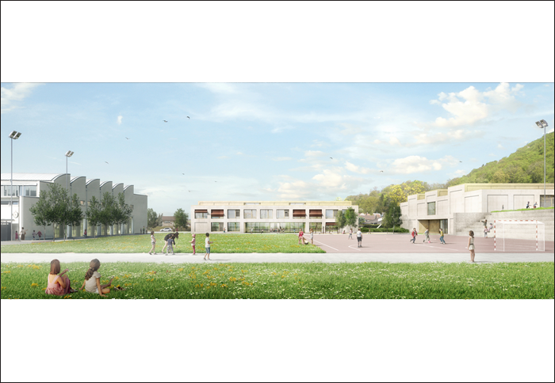
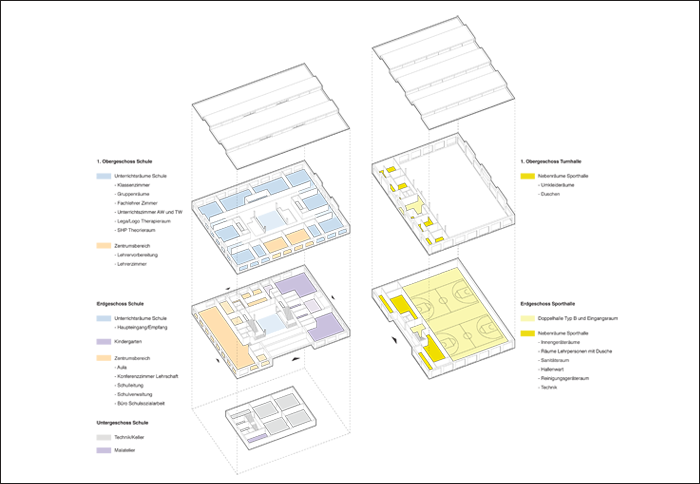
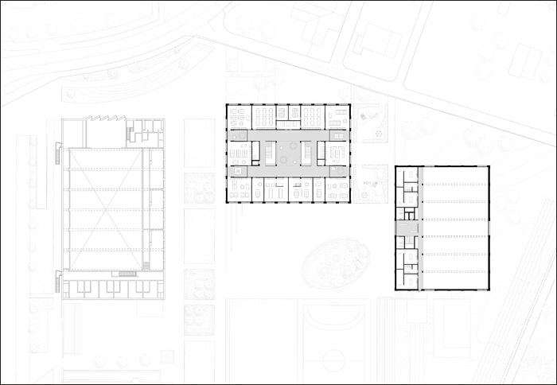
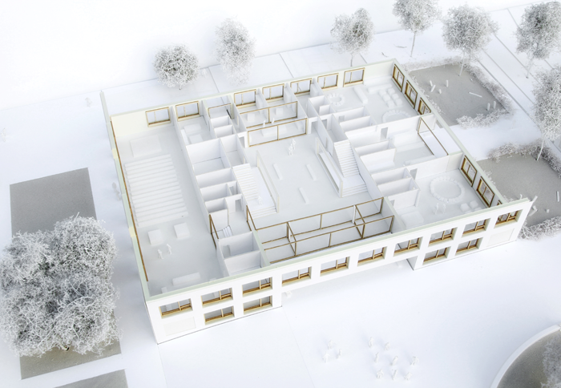
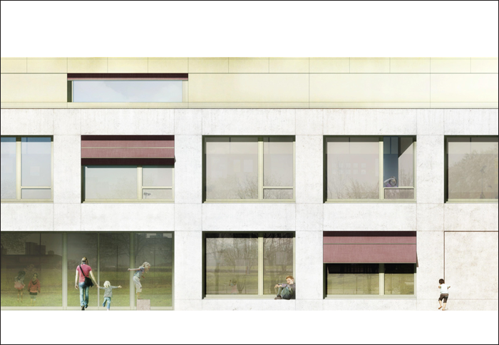
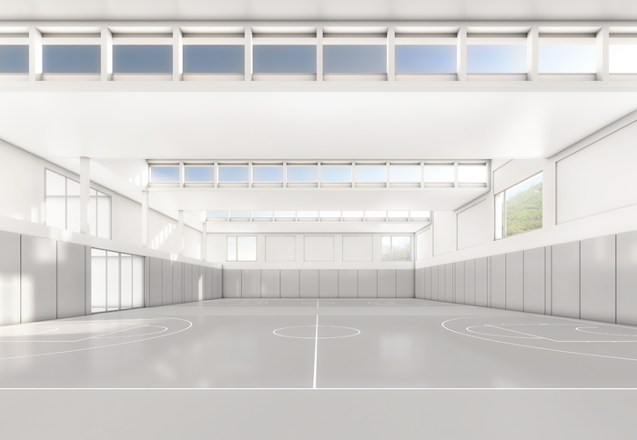
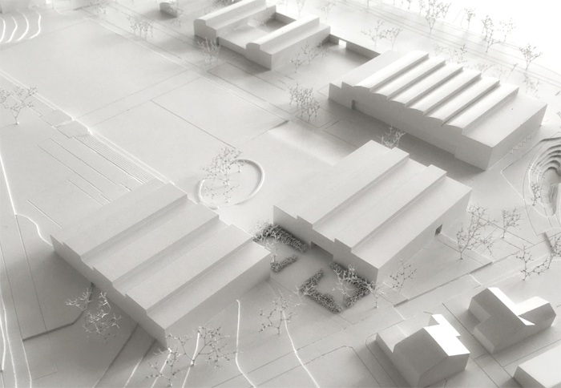

Project: SCHOOL WÜRENLINGEN, 2nd place














Project: SCHOOL WÜRENLINGEN, 2nd place
Location: Würenlingen (AG)
Customer: Municipality of Würenlingen
Program: School with kindergarten and double sport hall
Budget: 23’500’000 CHF
Date: 2016
Type: Selected Parallel Study, 2nd place
Team: NYX architectes, Synaxis AG Zürich (structural engineer), Andreas Geser Landschaftsarchitekten AG (landscape architect), Jaeger Baumanagement AG (cost specialist)
Images: Play-Time, NYX architectes